一位普通中年男人的 2 月生活实录
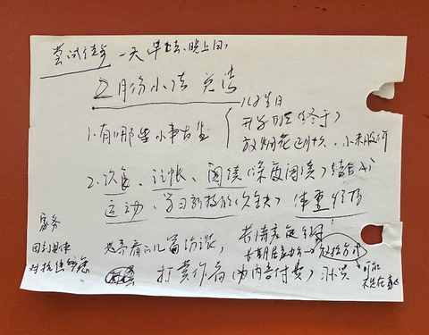
中年人的生活多少有点波澜不惊，很平淡很规律，上午用笔在纸上快速的记录了 2 月份的零碎记忆，就以此来做记录：
一、儿子满 8 岁
没去年在海底捞过生日热闹，但吹蜡炬的时候一样开心！
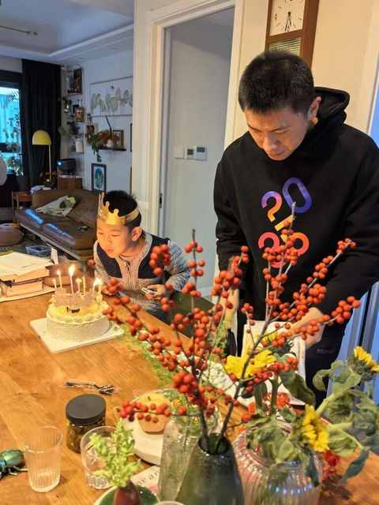
二、可算是开学咯
二年级下学期如期而至，班级QQ 群重新开始活跃。
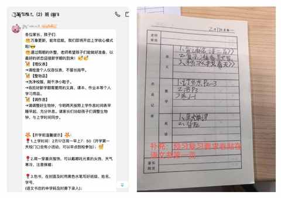
三、用 Ai 去解决实际问题
尝试结合 ai 做一些深度阅读，先从阅读公众号文章开始，在此推荐两个常开的公众号：
① 文化纵横
人文社科的文章为主
整体偏学术，常有不熟悉的名词与概念
每篇头条文章都有导读，文章读起来并不轻松，需专注阅读才能顺利读完
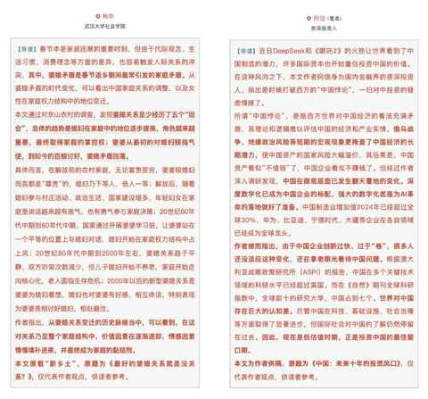
② 每日人物
商业和时下热门话题兼备
内容基于客观事实且不过多输出编辑观点
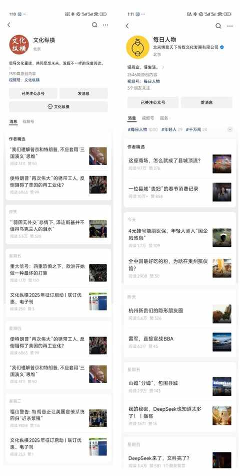
读起来觉得不明白的内容，让 ai 输出其理解：
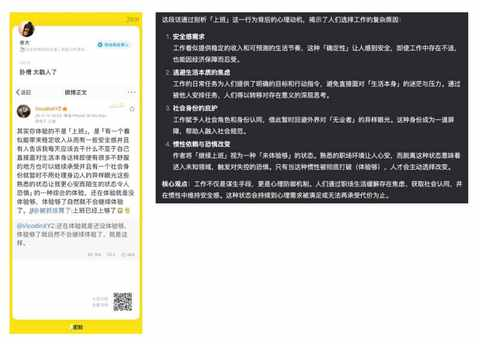
看到一个新的名词之后，让 ai 给出延伸的内容：
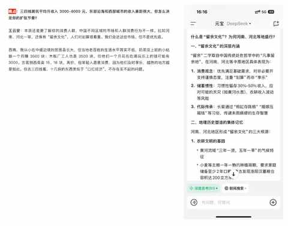
四、维持体重，不能懈怠
好不容易减下来，必须守在正常范围。
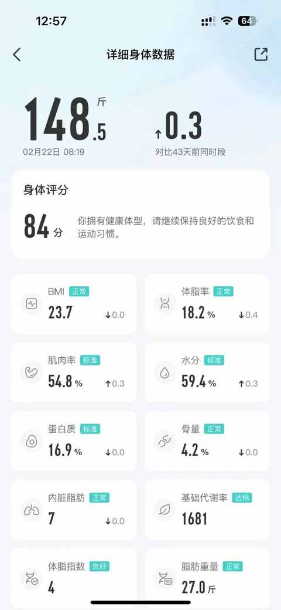
五、保持每天记账，记录每一笔开支
从 2025 年的 1 月 1 日开始重新记账，第二个月也做到完整记录。
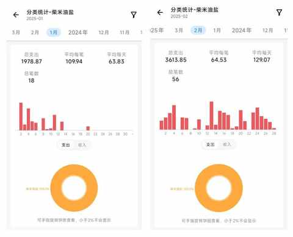
六、培养一个新习惯
每天用 20 分钟发一条真诚的朋友圈。
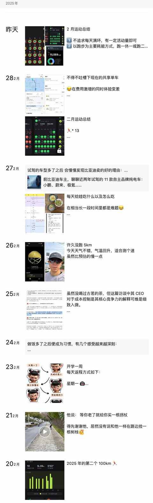
七、开始思考人意义和工作的意义
源于看了知危的两篇文章，针对人口问题访谈两位人口问题的学者：梁建章和黄文政，两篇访谈都值得一看。
小编的提问够直接，两位学者的回答也足够真诚，两位学者均表示很理解当下年轻人的处境，从各自角度阐述了关于当下人口问题的解决方案。
专访梁建章：万物过剩，唯缺孩子
黄文政的访谈中有提到一个观点，关于人的意义与工作的意义，同时也涉及到当下的核心议题之一：Ai 会逐步取代人类的工作。
生育率持续低迷，所有人都会成为受害者？
“人不是因为你的工作需要才有价值，人活着就是价值。假设一个极端的可能，如果所有的工作都被 AI 给取代了，人是不是就应该全部去自杀？不是，人应该活得更好。”
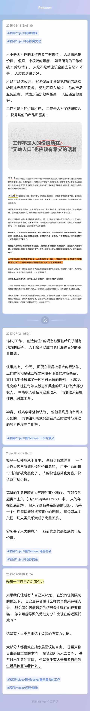
八、陪老婆练车
刚开始是选傍晚车少的时候练一练，路线是从家到公司。
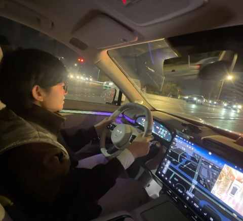
后面以白天为主：大约上午 9 点多老婆开车到公司门口，她下车后我再把车开回来，每周两次左右。
老婆作为从科目一到科目四都一次过的新司机来说，相信只需再练习一段时间，就能独自开车上下班、上高速和开长途。